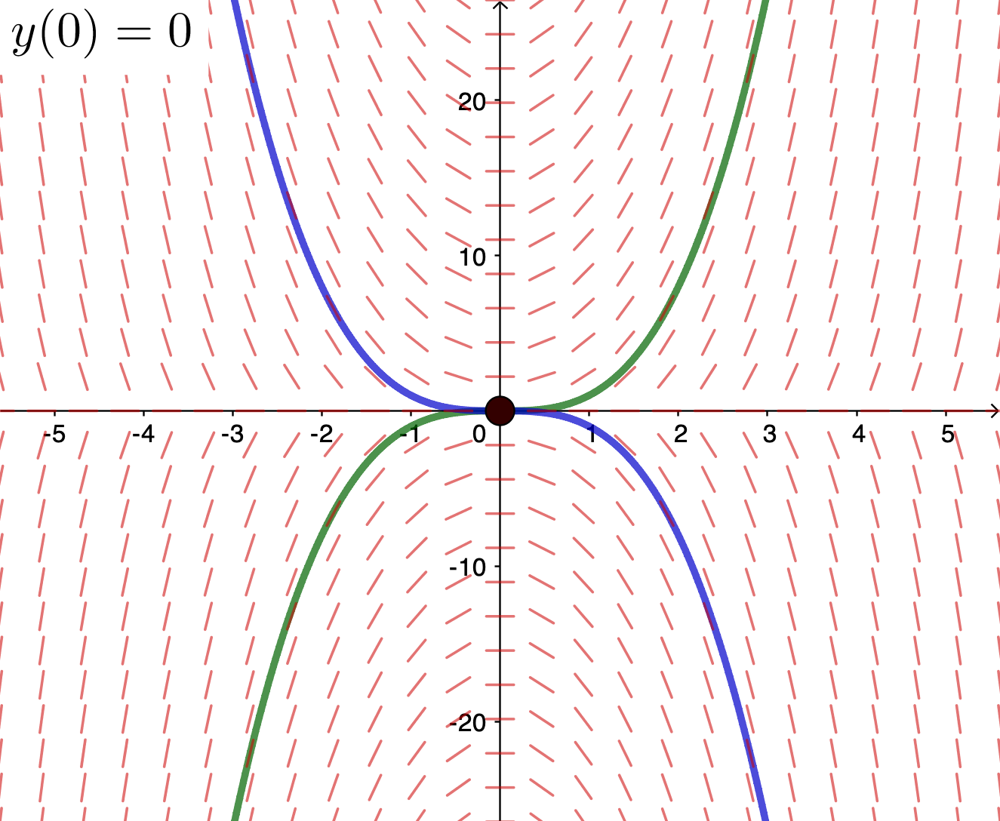

Chapter 1
By the end of this section, you should be able to answer the following questions about first order ODEs:
In MATH1052, you were introduced to Ordinary Differential Equations (ODEs) and Initial Value Problems (IVPs) and saw how to find solutions to some special types of first order equations. In particular, there should be three types of first order ODEs that you are familiar with solving.
In MATH1052, you were introduced to Ordinary Differential Equations (ODEs) and Initial Value Problems (IVPs) and saw how to find solutions to some special types of first order equations. In particular, there should be three types of first order ODEs that you are familiar with solving.
• Directly integrable: $\dfrac{dy}{dx} = f(x)$
• Separable: $\dfrac{dy}{dx} = f(x)g(y)$
• Linear: $\dfrac{dy}{dx} = q(x)-p(x)~y$
• Directly integrable: $\dfrac{dy}{dx} = f(x)$
$\displaystyle \dfrac{dy}{dx}~dx = f(x) ~dx $ $\displaystyle \;\;\Rightarrow \;\; dy = f(x) ~dx $
$\displaystyle \;\;\Rightarrow \;\; y =\int f(x)~dx + C $
• Separable: $\dfrac{dy}{dx} = f(x)g(y)$
$\displaystyle \dfrac{1}{g\left(y\right)}\dfrac{dy}{dx} = f(x) $ $\displaystyle \;\;\Rightarrow \;\; \dfrac{1}{g\left(y\right)}\dfrac{dy}{dx} dx = f(x) ~dx $
$\displaystyle \;\;\Rightarrow \;\; \dfrac{1}{g\left(y\right)}~dy = f(x) ~dx $ $\displaystyle \;\;\Rightarrow \;\; \int \dfrac{1}{g\left(y\right)}~dy = \int f(x) ~dx +C $
Note: Here we have an implicit solution.
• Linear: $\dfrac{dy}{dx} = q(x)-p(x)~y$
First, we need to write it in standard form: \[ \frac{dy}{dx} + p(x) y = q(x). \]
Multiply by $I(x) \neq 0$ to obtain
• Linear: $\dfrac{dy}{dx} = q(x)-p(x)~y$
We choose $I(x)$ such that $\frac{d}{dx}\big(I(x)~y\big) = I(x)~ q(x).$
Integrating we obtain $ \ds I(x)~y = \int I(x)~q(x)~dx + C. $
That is $ \ds y = \frac{1}{I(x)}\int I(x)~q(x)~dx + \frac{C}{I(x)}. $
Note: $I(x) = \exp\left(\int p(x)~dx\right)$ is the integrating factor.
In most applications involving first order ODEs, we are required to solve an IVP. Generally, this is a problem of the form \[ \frac{dy}{dx}=f(x,y), \quad y(x_0 )= y_0. \]
In other words, we seek to find solutions of the ODE which pass through the point $(x_0, y_0)$ in the $x$-$y$ plane.
Integrating: $\ds y = \int x ~dx + C$ $\,=\ds \frac{1}{2}x^2 + C$
Let's solve now the Initial Value Problem (IVP): $y(0)=1 $ $\Rightarrow 1 = \frac{1}{2}(0)^2 + C$ $ \Rightarrow C = 1$.
Therefore \[ y = \frac{1}{2}x^2 + 1. \]
$\ds y = \frac{1}{2}x^2 + 1.$
|
|
GeoGebra commands for |
This is a separable ODE:
So $\, \ds \frac{dy}{y^{1/3}}=3x $
Integrating we have $\, \ds \Rightarrow
\frac{3}{2}y^{2/3}=\frac{3}{2}x^2 + C$
Let's solve now the IVP: $y(0)=0 $ $\;\Rightarrow \;\ds \frac{3}{2}(0)^{2/3}=\frac{3}{2}(0)^2 + C$ $ \;\Rightarrow\; C = 0$ $ \;\Rightarrow\; y^2 = \left(x^2\right)^3$ $ \, = x^6$.
Therefore \[ y = x^3 \quad \text{ or } \quad y = - x^3. \]
$\ds y = x^3 \quad \text{ or } \quad y = - x^3.$
|
|
GeoGebra commands for What is going on? 🤔 |
$\ds y = x^3 \quad \text{ or } \quad y = - x^3.$
|

|
What is going on? 🤔 Here the computer cannot help us! 😢 |
Note that the ODE is linear:
$\, \ds \frac{dy}{dx} + \dfrac{y}{x}=1$
Multiply by $x$: $\, \Ra \;\ds x\frac{dy}{dx} + y=x$
$\, \Ra \;\ds \dfrac{d}{dx}\big(xy\big)=x$
Here the factor $x$ is the Integrating factor,
Note that the ODE is linear:
$\, \ds \frac{dy}{dx} + \dfrac{y}{x}=1$
Multiply by $x$: $\, \Ra \;\ds x\frac{dy}{dx} + y=x$
$\, \Ra \;\ds \dfrac{d}{dx}\big(xy\big)=x$
$\, \Ra \; xy = \ds \frac{1}{2}x^2 +C$ or $\; \ds y = \frac{1}{2}x+ \frac{C}{x}.$
Thus the general solution of the linear ODE $\, \ds \frac{dy}{dx} + \dfrac{y}{x}=1$ is $$ \ds y = \frac{1}{2}x+ \frac{C}{x}.$$
Can we solve the IVP: $y(0)=1$? Note that $\ds \frac{C}{x}\to \infty $ when $x \ra 0$.
How about choosing $C=0$? But then $y(0)=0$. 😕
Then it cannot satisfy the initial condition. Therefore, no solution satisfies $y(0)=1$.
No solution satisfies $y(0)=1$.
|
|
GeoGebra commands for Same issue with technology! 🤔 |
Here we consider the initial value problem of the form \[ \frac{dy}{dx}=f(x,y), \quad y(x_0)=y_0. \]
The main result concerns the conditions under which we have existence and uniqueness of a solution.
This result only tells us that a solution exists or is unique locally (i.e., in the rectangle $R$). Beyond $R$, we simply don't know. Let's look at the previous three examples in the context of the two conditions. In the next section, we look closer at understanding these conditions and how they arise.
Here $f(x,y) = x$ is continuous and $\ds \frac{\partial f}{\partial y} = 0$ is continuous.
This implies a unique solution: $y =\ds\frac{1}{2}x^2 + 1.$
For $(x_0,y_0)=(0,0)$, $f(x,y) = 3xy^{1/3}$ is continuous, then the solution exists.
On the other hand we have $\ds \frac{\partial f}{\partial y} = \frac{x}{y^{2/3}}.$ This is not continuous in any rectangle containing $(0,0).$
Therefore, we cannot comment on uniqueness. In fact we have that $y=\pm x^3.$
Here $\;f(x,y) = \dfrac{x-y}{x}$ is not continuous in any rectangle containing $(0,1).$
Therefore, we cannot comment on existence.